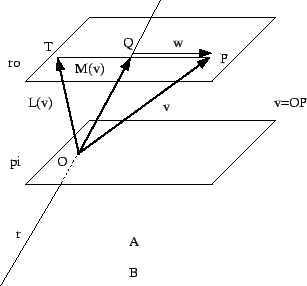

Next: About this document ...
P4 de Álgebra Linear I - 2002.2
Data: 2 de dezembro de 2002
Gabarito
1) Decida se cada afirmação a seguir é verdadeira
ou falsa e marque com caneta sua resposta no quadro abaixo.
Atenção: responda todos os itens, use "N = não sei"
caso você não saiba a resposta. Cada resposta certa vale 0.3, cada resposta errada vale -0.2, cada resposta N vale 0.
Respostas confusas e/ou rasuradas valerão -0.2.
| Itens |
V |
F |
N |
|
| 1.a |
|
F |
|
|
| 1.b |
|
F |
|
|
| 1.c |
|
F |
|
|
| 1.d |
V |
|
|
|
| 1.e |
V |
|
|
|
| 1.f |
|
F |
|
|
| 1.g |
V |
|
|
|
1.a) Os vetores (1,1,1), (1,2,1) e (1,3,1) formam uma
base de
 .
.
Falso:
É suficiente ver que não são linearmente independentes.
Para isto é suficiente verificar que
1.b)
Sejam E um espelhamento de
 e
R uma rotação de
.
A composição
é uma rotação.
e
R uma rotação de
.
A composição
é uma rotação.
Falso:
O determinante
Mas o determinante de uma rotação é 1.
1.c)
Toda matriz  triangular é diagonalizável.
Falso:
Considere a matriz
triangular
triangular é diagonalizável.
Falso:
Considere a matriz
triangular
O único autovalor da matriz é 1, e os autovetores
associados são da forma (0,t), .
Logo
é impossível encontrar uma base de autovetores,
portanto, a matriz não é diagonalizável.
1.d)
As matrizes
são semelhantes.
Verdadeiro:
As duas matrizes são triangulares com a diagonal formada por números
diferentes. Logo as duas matrizes têm autovalores (correspondentes
à diagonal) 77777, 88888 e 99999. Como possuem três autovalores
diferentes, as matrizes são diagonalizáveis, e uma forma diagonal delas
é
Logo
A e B são semelhantes a D, isto é,
Portanto,
D=P-1A P.
Logo, substituindo D,
B=QP-1 A P Q-1=
(QP-1) A (QP-1)=
MAM-1,
onde
M=QP-1.
Isto é, as matrizes A e B são semelhantes.
1.e)
A matriz
possui uma base ortonormal de autovetores.
Verdadeiro:
Se trata de uma matriz simétrica.
1.f)
As retas
 e
e
 ,
,
são reversas.
,
,
são reversas.
Falso:
Veja primeiro que não são paralelas (os vetores
diretores não são paralelos).
Para ver se são reversas é suficiente ver se as
retas se interceptam. Ou seja, ver
se o sistema
tem solução:
Da primeira e da segunda equações temos,
.
Logo, substituindo na terceira,
Logo as retas se encontram no ponto
(-2/3, 1/3,1/3), logo não são reversas.
1.g)
Seja A uma matriz
ortogonal e simétrica cujo traço é
igual a 3. Então A é a identidade.
Verdadeiro:
Como A é simétrica, seus autovalores são reais.
Como A é ortogonal, seus autovalores são .
Logo as possibilidades para os autovalores de A são:
-
1 com multiplicidade 3, e o traço é 3,
-
1 com multiplicidade 2 e -1 simples,
e o traço é 1,
-
1 um autovalore simples e -1 com multiplicidade 1,
e o traço é -1,
-
-1 com multiplicidade 3, e o traço é -3.
Logo a única possibilidade é a primeira. Em tal caso a forma
diagonal de A é a identidade. Logo A é semelhante a
identidade. Logo é a própria identidade:
A=P (Id) P-1= P P-1 =(Id).
2)
Escolha qual das afirmações a seguir é a verdadeira
e marque com caneta sua resposta no quadro abaixo.
Atenção: responda todos os itens, use "N = não sei"
caso você não saiba a resposta. Cada resposta certa vale
0.6, cada resposta errada vale -0.1, cada resposta N vale 0.
Respostas confusas e/ou rasuradas valerão -0.1.
| Itens |
a |
b |
c |
d |
e |
f |
N |
|
|
|
| 2.1 |
|
|
|
|
e |
|
|
|
|
|
| 2.2 |
|
|
|
d |
|
|
|
|
|
|
| 2.3 |
|
|
c |
|
|
|
|
|
|
|
| 2.4 |
|
b |
|
|
|
|
|
|
|
|
- (2.1)
O polinômio característico de A é:
- (a)
 .
.
- (b)
.
- (c)
 .
.
- (d)
 .
.
- (e)
 .
.
- (f)
Nenhuma das opções anteriores, todas estão erradas.
- (2.2) Os autovalores de A são:
- (a)
1 (simples) e 2 (de multiplicidade 2).
- (b)
0 e 2 (de multiplicidade 2),
- (c)
1, -1 e 3,
- (d)
1 (de multiplicidade 2) e 2 (simples),
- (e)
0, 4 e -1,,
- (f)
Nenhuma das opções anteriores, todas estão erradas.
- (2.3)
Estude as seguintes afirmações sobre os autovetores de
A:
- (a)
Os vetores (1,0,1), (0,1,-1) e (1,1,2) correspondentes as
colunas da matriz A são autovetores de A.
- (b)
Os vetores (1,0,1), (0,1,1) e (1,-1,2)
correspondentes as linhas da matriz A
são autovetores de A.
- (c)
Os vetores (1,1,1) e (1,1,0) são autovetores de A.
- (d)
Os vetores (1,1,1), (0,1,1) e
(1,1,0) são autovetores de A.
- (e)
A matriz A não é simétrica, portanto não possui
nenhum autovetor.
- (f)
Nenhuma das opções anteriores, todas estão erradas.
- (2.4)
Considere a base
 .
A matriz de A na base
.
A matriz de A na base  é:
é:
- (a)
- (b)
- (c)
- (d)
- (e)
- (f)
Nenhuma das opções anteriores, todas estão erradas.
Resposta:
(2.1)
O polinômio característico de A é o
determinante
Logo a resposta correta é (e).
Comentários: Observe que o traço da matriz A é
4. Como o traço é o coeficiente do termo de grau (n-1) (n
o tamanho da matriz) do polinômio característcio, no nosso
caso, n=3. Logo as possibilidades (a),(b),(c) e (d) estão
descartadas.
Observe também que o determinante de A é
Como o determinante é o coeficiente independente do polinômio
caracteístico, isto também descarta as possibilidades
(a),(b),(c) e (d).
(2.2) Os cálculos do item anterior implicam que os autovalores
são 1, de multiplicidade dois, e 2 simples. Logo a resposta
correta é (d).
Comentários: Como o traço de A é 4, e o
traço é a soma dos autovalores contados com multiplicidade,
as possibilidades (a), (c) e (e) estão descartadas.
Como o determinante de A é 2 e coincide com o produto dos
autovalores (considerados com multiplicidade), as possibilidades
(a),(b),(c) e (e) estão descartadas.
(2.3) Para responder a este item devemos determinar os
autovetores de A associados a 1 e 2.
Os autovetores de 1 são os vetores não nulos (x,y,z) que
verificam
ou seja,
Ou seja os vetores da forma (t,t,0), .
Observe que 1 tem multiplicidade 2 e somente é possível
obter um autovetor associado (isto é, todos seus autovetores
são paralelos). Portanto, A não é diagonalizável.
Os autovetores associados a 2 são os vetores não nulos
(x,y,z) que verificam
ou seja,
Ou seja os vetores da forma (t,t,t), .
Dos comentários anteriores temos que: A não possui uma base
de autovetores, e os autovetores de A são os vetores não
nulos da forma (t,t,t) e (t,t,0). Logo (1,1,1) e (1,1,0)
são autovetores de A, e o item (c) é verdadeiro.
Vejamos agora as possíveis respostas. Fazendo os cálculos (e
dos comentários acima) temos que (a) é falso:
A(1,0,1)=(2,1,3)! Isto também implica que (b) é falso.
Analogamente, (0,1,1) não é autovetor, logo (d) é falso.
Finalmente, a última afirmação é um disparate completo.
(2.4) Fazemos u=(1,1,1), v=(0,1,1) e w=(1,1,0).
Já sabemos que
A(1,1,1)=2(1,1,1) e que
A(1,1,0)=(1,1,0). Logo
Finalmente,
A(0,1,1)=(1,2,1).
Devemos escrever este vetor na base :
(1,2,1)=x(1,1,1)+y(0,1,1)+z(1,1,0),
ou seja,
Portanto, da primeira e terceira equações, y=z e
Logo y=1=z. Portanto, x=0. Logo
A(v)=v+w.
Isto implica que a matriz de A na base
é a matriz do
item (b).
Comentários: Como a matriz A é semelhante a
matriz de A na base ,
devem necessariamente ter o mesmo
traço e o mesmo determinante. Como neste caso todas as matrizes
têm determinante igual a 2 e traço 4, não é possí
vel descartar a priori (usando este critério) nenhuma
possibilidade.
De uma outra forma, lembre que .
Se a primeira matriz
estivesse correta teríamos a contradição A(u)=u!.
Similarmente, na matriz de (c),
 !. No caso da
matriz (d) teríamos que A seria diagonalizável, e pelos
comentários já feitos sabemos que isto é falso. Finalmente,
na matriz de (e) fornece
!
3)
Dados o plano
!. No caso da
matriz (d) teríamos que A seria diagonalizável, e pelos
comentários já feitos sabemos que isto é falso. Finalmente,
na matriz de (e) fornece
!
3)
Dados o plano
 e a reta
r=(-t,t,t),
considere a transformação linear M definida
como segue.
Dado um ponto P=(x,y,z), considere o vetor
e a reta
r=(-t,t,t),
considere a transformação linear M definida
como segue.
Dado um ponto P=(x,y,z), considere o vetor
 e defina
e defina
onde Q é o ponto de interseção do plano  contendo o ponto P e
paralelo a
contendo o ponto P e
paralelo a  e a reta r.
Veja a figura.
Considere também a transformação linear L definida como
segue,
e a reta r.
Veja a figura.
Considere também a transformação linear L definida como
segue,
onde T é o ponto do plano
tal que Q é equidistante de
T e de P e os pontos P, T e Q são colineares. Veja a figura.
pi
ro
r
r
w
w v=OP

P
P
Q
Q O
O v
v T
T
M(v)
M(
v) L(v)
L(
v) A
v=
M(
v)+
w
B
L(
v)=
M(
v)-
w

- a)
Determine a matriz da transformação linear
M.
- b)
Determine a matriz da transformação linear
L.
- c)
Determine uma base de autovetores de
M.
- d)
Determine uma base de autovetores de
L.
- e)
Determine uma forma diagonal de
M.
- f)
Estude se é possível escrever M da
forma
M=PDPt,
onde P é ortogonal.
Resposta:
(a) Resolveremos o problema de três formas diferentes.
Primeiro usando geometria analítica. Considere o vetor
v=(a,b,c) e o ponto P=(a,b,c). O plano contendo P paralelo a
é
A interseção de
e r ocorre quando o parâmetro t
verifica
Ou seja, no ponto
(a+b-c,-a-b+c,-a-b+c).
Isto é
M(a,b,c)=(a+b-c,-a-b+c,-a-b+c).
Portanto,
Logo
Uma segunda forma é a seguinte.
Observe que
os vetores do plano
se transformam no vetor nulo, e o vetor
(1,-1,-1) nele próprio. Portanto, conhecemos as imagens dos
vetores (1,0,1), (0,1,1) (vetores do plano) e (1,-1,-1)
(vetor diretor da reta) que formam uma base. Logo, M está
determinada. Escrevendo
(1,0,0)=(1,-1,-1)+(0,1,1),
temos
M(1,0,0)=
M(1,-1,-1)+M(0,1,1)= (1,-1,-1).
Analogamente, escrevendo
(0,1,0)=x(1,-1,-1)+y (0,1,1)+z(1,0,1)
temos
logo z=-1, x=1 e y=2. Portanto,
Finalmente,
(0,0,1)=x(1,-1,-1)+y (0,1,1)+z(1,0,1)
temos
logo z=-x, x=y, e z=1 e x=y=-1. Assim,
E obtemos a matriz acima.
Existe um último método. Considere a base
A base
é uma base de autovetores de M (estamos
respondendo ao item (c)!), cujos autovetores são 1, 0 e 0.
Logo a matriz de M na base
é
que é precisamente uma forma diagonal de M (estamos
respondendo ao item (e)!). Portanto,
onde P é a matriz de mudança da base
à
canônica:
Faça os cálculos (que são simples) usando, por exemplo, o
Método de Gauss e veja que
Portanto,
Obtendo novamente a mesma matriz.
(b) Dado um vetor v escreva,
v=M(v)+w.
Logo
w=v-M(v)=Id(v)-M(v).
Por definição,
Ou seja,
Isto é,
Verifique o que v. já sabe geometricamente:
Assim estamos respondendo ao item (d),
obtendo uma base de autovetores de L.
(c) A base já foi obtida:
(d) A base já foi obtida:
(e) Uma forma diagonal já foi obtida:
(f) Não é possível. Em primeiro lugar, se fosse
possível M seria ortogonalmente diagonalizável, portanto,
simétrica, o que já sabemos que não acontece (veja a matriz
de M!).
Caso v. não tenha obtido a matriz M pode raciocinar
geometricamente: a matriz não é ortogonalmente
diagonalizável, pois o autovetor (1,-1,-1) associado a 1
não é ortogonal ao plano x+y-z=0, onde estão os
autovetores associados a 0.
4)
Considere as retas
e
s obtida como interseção dos planos
 e
e
 .
.
- a)
Determine uma equação paramétrica de s.
- a)
Determine a equação cartesiana do plano
normal
a r que contém o ponto (1,2,3).
- c)
Determine a posição relativa de r e
s (reversas, paralelas, ou concorrentes).
- d)
Se as retas são reversas calcule a distância entre elas, se
paralelas a equação do plano que as contém, e se
concorrentes seu ponto de interseção.
Resposta:
(a) Para calcular a equação é suficiente resolver o
sistema
Escalonando,
Escolhendo y como parámetro (i.e. fazendo y=t) temos
z=t e
x=1+z-2y=1 +t -2t=1-t.
Logo uma equação paramétrica da reta s é:
Observe que o ponto (1,0,0) pertence aos dois planos e que o
vetor diretor da reta (-1,1,1) é ortogonal aos vetores normais
dos planos
e .
Logo o resultado é coerente.
(b) O vetor normal do plano
é o vetor diretor de
r, isto é, o vetor (1,-1,2). Portanto, a equação
cartesiana de
é da forma:
onde d é determinado pela condição
 :
:
Portanto, a equação cartesiana de
é
(c) Como o vetor diretor de s é (1,-1,-1) e o de r
é (1,-1,2) as retas não são paralelas. Para ver se são
reversas ou concorrentes há duas possibilidades. A primeira é
ver se o sistema
possui solução. Em caso afirmativo as retas são
concorrentes e em caso negativo reversas. Observe que a primeira e
a segunda equações são iguais. Substituindo o valor de
 na primeira equação temos
na primeira equação temos
Que fornece s=2/3. Logo o sistema possui solução é o
ponto de interseção é
(1/3,2/3, 2/3).
Observe que (como deve ser) obtemos o mesmo ponto substituindo os
parâmetros t e s obtemos o mesmo ponto.
Vaja também que estamos respondendo ao item (d).
Outra possibilidade para responder a questão é escolher um
ponto de r (por exemplo, P=(0,1,0)), um ponto de s (por
exemplo, Q=(1,0,0) e os vetores diretores
v=(1,-1,2) de r e
w=(1,-1,-1) de s e considerar o produto misto
Se o resultado é nulo as retas são concorrentes, e reversas em
caso contrário. Temos
Logo as retas são concorrentes.
(d) O ponto de interseçõ já foi calculado:
(1/3,2/3,2/3).
Next: About this document ...
Lorenzo J. Diaz
2002-12-02